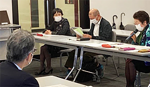

11月25日（水）、埼玉会館ラウンジにて、第56回埼玉県消費者大会実行委員会と埼玉県との懇談会が開催され、埼玉県からは11人、実行委員会からは9団体11人が出席しました。第56回埼玉県消費者大会で確認された「埼玉県への要請書」に関して、要請書から抜粋した14項目について県の担当部局より口頭で回答があり、それを受けて要請内容の理解を深める発言や質疑応答をおこないました。
新型コロナウイルス感染症拡大防止のため、実行委員会団体の参加については最小限とし、埼玉消団連幹事団体を中心にすすめました。
 第56回埼玉県消費者大会実行委員会による埼玉県への要請書はこちら【PDF：310KB】
第56回埼玉県消費者大会実行委員会による埼玉県への要請書はこちら【PDF：310KB】
 |
 |